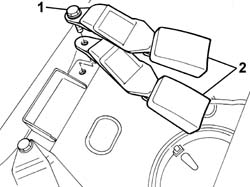

7065B14 REAR SEAT BELT ANCHORAGE ROD , (ONE), LEFT OR RIGHT - R.R.
- Path
- Procedures > 70 FITTINGS > 7065 SEAT BELTS AND ACCESSORIES > 7065B REAR SAFETY BELTS > 7065B14 REAR SEAT BELT ANCHORAGE ROD , (ONE), LEFT OR RIGHT - R.R.
- Kind
- repair procedure (removal / refitting; the operation number is the code)
- Applies to
- all engines; all production periods
- Interactive page
- https://sloeber94.github.io/elrnDB-fPnd/en/#/2753318
Applies to: all engines; all production periods
 Removing
Removing
 Refitting
RefittingOp. 7050A20 ONE-PIECE REAR SEAT CUSHION - R R
Op. 7040B10 LOAD PLATFORM (LUGGAGE PLATFORM) TRIM - R+R
1. Undo the retaining bolt.
2. Remove the anchorage rods.

Applies to: all engines; all production periods
Refitting
RemovingPosition the anchorage rods.
Tighten the fixing bolt to the recommended torque.
Fastening | Component | Ø | Value (daNm) | |
|---|---|---|---|---|
- | Bolt | BRANCH WITH SEAT BELT BUCKLE REAR | M10 X 1.25 | 4.0 |